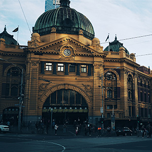
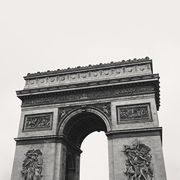
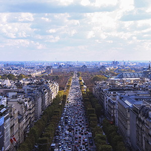
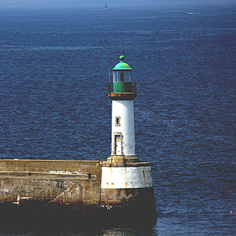

Jean Stefano is a Melbourne born, acclaimed fashion designer, who is well known for his iconic, multifaceted designs. He has worked within a variety of industries, in order to create designs for both television and print. His inspiration for design is often derived from Leonardo da Vinci’s quote, “simplicity is the ultimate sophistication”. He is an avid traveller, who has worked across a multitude of countries, but has now decided to settle down in Melbourne. He has his wife Anna, have just recently launched their first retail clothing outlet, “Voyage”.
Early life
Born in 1978, in the heart of Melbourne, Jean grew up with a strong education and a taste for style. His passion for design was evident during his childhood, through his involvement in school plays, and art and craft workshops.
After graduating from high school, Jean was accepted into one of the most prestigious design schools in the United Kingdom, the Royal College of Art. However, an emerging health issue, combined with the high workloads and requirements of the design school, lead to Jean dropping out and returning to Melbourne.
Career
Jean began his career, working for a small family business in France, Trèfle Bleu. All the clothes were handcrafted and designed in the store. After his short period of work, Jean decided to move across Europe, working with a variety of different businesses. He worked in Germany, Italy, Hungary, Spain, Switzerland and Czech Republic.
Jean worked briefly for a design firm in Japan. It was here that he met his wife Anna, who was also working there at the time. She was also an Australian designer, who was travelling abroad.
Together, they travelled to the United States in order to work with various producers, to create designs for a variety of films. It wasn’t long before both Jean and Anna were ready to settle down, and move back to Australia.
They settled in Melbourne, in order to create their own clothing outlet in South Yarra. Both Jean and Anna were interested in the design of streetwear, and wanted to create modern, comfortable clothes. They decided to name the clothing outlet, Voyage, to reflect their love of travelling.


